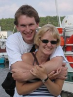

Richard Williamsonrichard (at) rwilliamson-mathematics.info |
I am a mathematician, and have principally worked and studied at the following institutions:
List of works and my research interests.
Courses taught or coordinated at NTNU.
|  |
The photo to the left is of my wife, Kari, and me in Hvaler, Norway in July 2006. The photo at the top of the page was taken by Kari in Port Meadow, Oxford, in October 2007. |
Last updated: 21:00 (GMT+2), 29/08/2015.